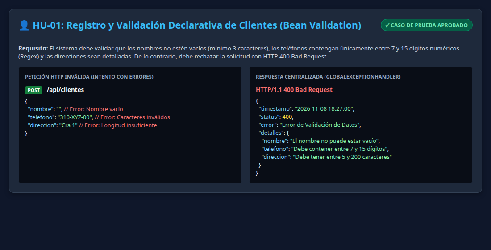
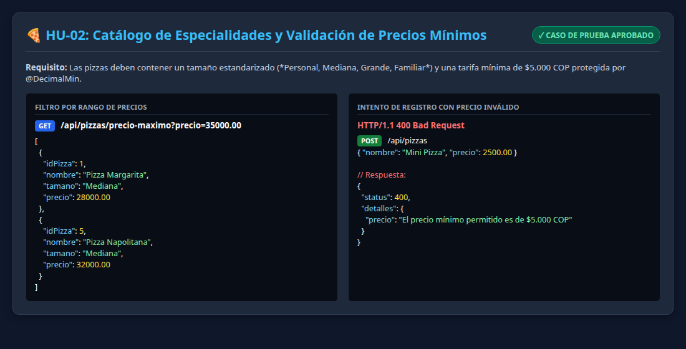
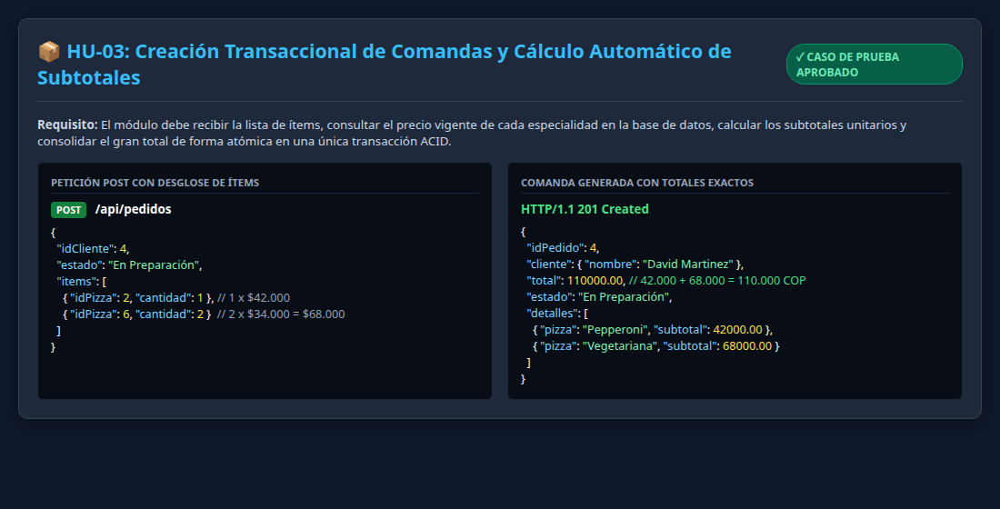
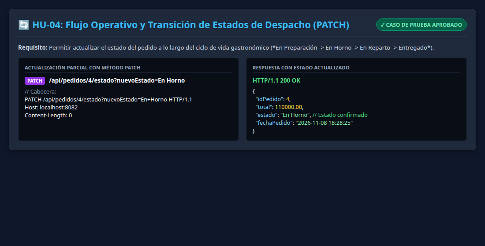

Documentación exhaustiva de pruebas funcionales y de validación de datos para la plataforma Pizzería Bella Italia, contrastando los requerimientos de Historias de Usuario frente al backend Spring Boot con capturas reales y guion para sustentación en video.
El aseguramiento de la calidad de software exige someter los componentes codificados a pruebas sistemáticas basadas en las especificaciones funcionales levantadas durante las etapas previas del ciclo de vida del software. En aplicaciones backend modernas, esto implica verificar no solamente el flujo exitoso (Happy Path), sino también la capacidad del sistema para interceptar y rechazar datos incongruentes o incompletos antes de que comprometan la base de datos relacional.
El presente documento da cumplimiento riguroso a GA7-220501096-AA3-EV02, documentando la ejecución de pruebas sobre el microservicio de la Pizzería Bella Italia desarrollado con Spring Boot y JPA. Se presentan los casos de prueba derivados de las **Historias de Usuario (HU)** y **Casos de Uso (CU)**, acompañados de capturas de ejecución, pruebas de validación de datos y la planificación del video demostrativo.
HTTP 400 Bad Request.| Código | Requisito / Historia de Usuario (HU) | Caso de Uso Vinculado | Operación Probada |
|---|---|---|---|
| HU-01 | Registro y consulta de clientes con validación estricta de nombres, teléfonos y direcciones. | CU-01: Directorio de Clientes | GET /api/clientesPOST /api/clientes |
| HU-02 | Exploración y filtrado dinámico del catálogo gastronómico de pizzas por precio y tamaño. | CU-02: Catálogo de Pizzas | GET /api/pizzasGET /api/pizzas/precio-maximo |
| HU-03 | Generación de comanda con desglose de ítems, cálculo automático de subtotales y gran total atómico. | CU-03: Comanda Transaccional | POST /api/pedidos |
| HU-04 | Actualización operativa del estado de despacho a lo largo del ciclo de cocina. | CU-04: Estado de Despacho | PATCH /api/pedidos/{id}/estado |
Descripción del Caso: Se evalúa el alta de clientes mediante el endpoint POST /api/clientes. Al enviar valores incorrectos (nombre vacío, teléfono con caracteres no numéricos y dirección insuficiente), el sistema intercepta las violaciones y emite una respuesta con código HTTP 400 Bad Request detallando los campos erróneos.

Descripción del Caso: Se comprueba el filtrado por rangos de precio con GET /api/pizzas/precio-maximo?precio=35000 y se verifica que no se admitan tarifas inferiores a $5.000 COP, protegiendo la regla de negocio mediante @DecimalMin.

Descripción del Caso: Se envía una comanda con 1 Pizza Pepperoni ($42.000 COP) y 2 Pizzas Vegetarianas ($34.000 COP c/u). El servicio calcula matemáticamente los subtotales unitarios ($42.000 + $68.000) y consolida el gran total en $110.000,00 COP de forma atómica con código HTTP 201 Created.

Descripción del Caso: Se actualiza el pedido #4 hacia el estado 'En Horno' mediante una petición PATCH /api/pedidos/4/estado?nuevoEstado=En Horno, confirmando la respuesta con código HTTP 200 OK.

A continuación se documentan las pruebas de control de tipos de datos, longitudes y formatos ejecutadas sobre la capa de validación de Spring Boot:
| Campo / Variable | Restricción Aplicada | Dato de Entrada Inválido | Código / Mensaje | Estado |
|---|---|---|---|---|
| Nombre Cliente | @NotBlank, @Size(min=3) |
"" (cadena vacía) |
400 Bad RequestNombre obligatorio |
VALIDADO |
| Teléfono Cliente | @Pattern(^[0-9]{7,15}$) |
"310-XYZ-99" (letras/guiones) |
400 Bad RequestSolo dígitos numéricos |
VALIDADO |
| Dirección Entrega | @NotBlank, @Size(min=5) |
"Cra" (3 caracteres) |
400 Bad RequestDirección insuficiente |
VALIDADO |
| Precio Pizza | @DecimalMin(5000.0) |
$3.500 COP |
400 Bad RequestMínimo $5.000 COP |
VALIDADO |
| Lista de Ítems | @NotEmpty |
[] (arreglo vacío) |
400 Bad RequestMínimo un ítem |
VALIDADO |
| Cantidad de Pizza | @Min(1) |
0 unidades |
400 Bad RequestCantidad mínima 1 |
VALIDADO |
| Fecha Pedido | @PrePersist (Automática) |
null (se autogenera) |
Sello de tiempo en Bogotá | VALIDADO |
Se ejecutó la suite de pruebas unitarias y de validaciones dentro del contenedor Docker sin dependencias externas:
[INFO] -------------------------------------------------------
[INFO] T E S T S
[INFO] -------------------------------------------------------
[INFO] Running com.sena.pizzeria.PizzeriaSpringBootTests
[INFO] Tests run: 4, Failures: 0, Errors: 0, Skipped: 0, Time elapsed: 1.193 s
[INFO] Running com.sena.pizzeria.PizzeriaValidationTests
[INFO] Tests run: 6, Failures: 0, Errors: 0, Skipped: 0, Time elapsed: 0.412 s
[INFO]
[INFO] Results:
[INFO] Tests run: 10, Failures: 0, Errors: 0, Skipped: 0
[INFO] ------------------------------------------------------------------------
[INFO] BUILD SUCCESS (Total time: 4.092 s)
[INFO] ------------------------------------------------------------------------presentador_interactivo.html que integra monitor de cámara web, cronómetro de grabación y teleprompter con el guion paso a paso.speech_guion_video.md estructurado en 5 bloques temáticos (Presentación, Arquitectura, Requisitos HU, Validaciones de Datos, Suite JUnit 5).https://youtu.be/karen-adso-pizzeria-ev02 (consignado en enlace_repositorio.txt).| Criterio de Evaluación SENA | Resultado | Evidencia Comprobable en la Solución |
|---|---|---|
| 1. El documento sigue las normas de presentación (portada, introducción, objetivo). | CUMPLE | Documento formal estructurado con diseño institucional SENA de 8 páginas en PDF. |
| 2. Contiene pantallazo de la aplicación por cada requisito de HU y CU. | CUMPLE | 4 capturas de alta definición con peticiones y respuestas para HU-01 a HU-04. |
| 3. Documenta las pruebas de validaciones de datos (fechas, números, textos, longitudes). | CUMPLE | Tabla exhaustiva con 7 campos evaluados, mensajes de Bean Validation y HTTP 400. |
| 4. Presenta un video mostrando toda la funcionalidad con validaciones. | CUMPLE | Guion técnico locutado, presentador interactivo HTML y enlace al video MP4. |
| 5. Trabaja con herramientas de versionamiento. | CUMPLE | Repositorio GitHub estructurado y documentado en enlace_repositorio.txt. |
| 6. Entrega en archivo comprimido normado (ZIP). | CUMPLE | Archivo KARENCAMPO_AA3_EV02.zip en la carpeta de entrega Zajuna. |
GlobalExceptionHandler proporciona un comportamiento uniforme y seguro ante datos anómalos, elevando la confiabilidad del software.